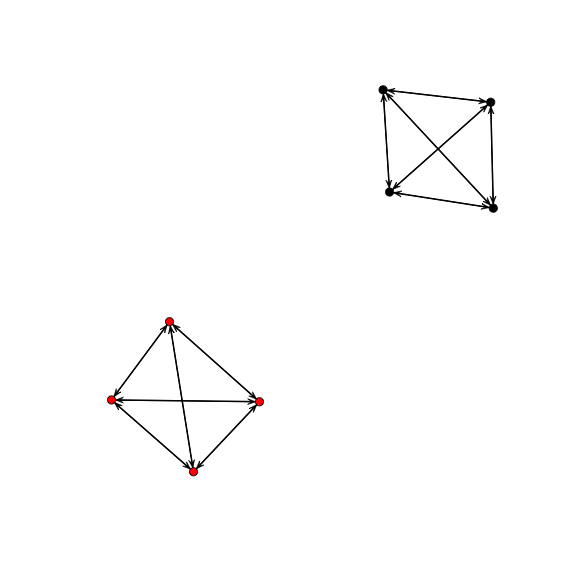
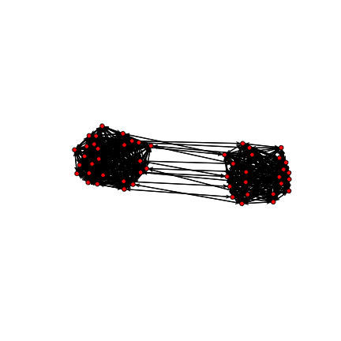
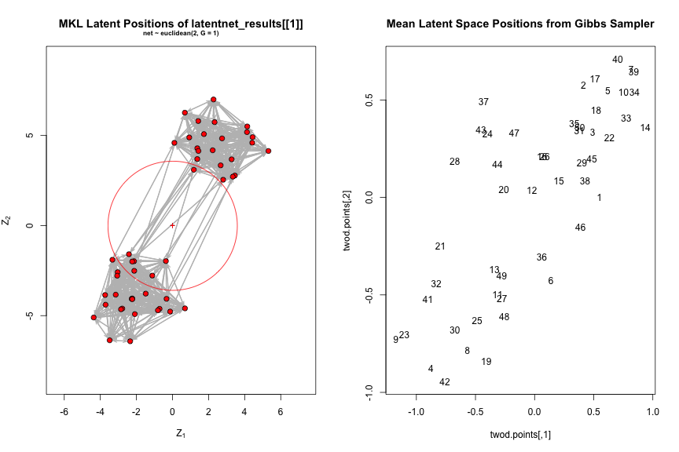
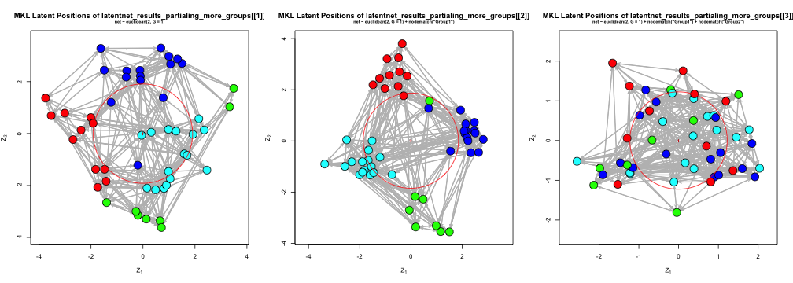
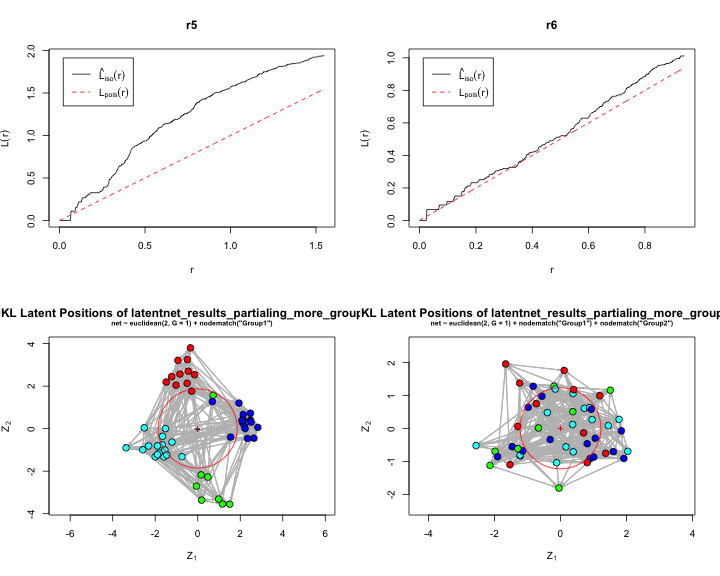
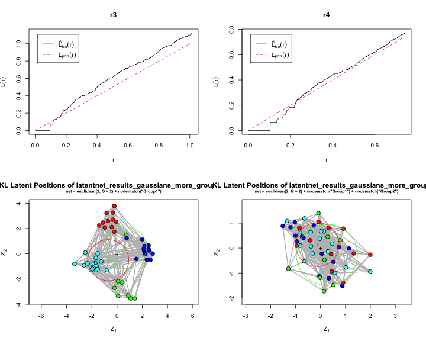

- With no node-level covariates, the latent space portion of an LSM is just a low-dimensional representation of the network
- appropriate as a layout algorithm or for uncovering "clusters" (Krivitsky et al. 2009).
Kenny Joseph
how does the latent space inform us of latent dyadic and network-level effects that drove the formation of the network?
when no effects exist outside observed node-level covariates, what does the latent space look like?
how do these two things change with different parameterizations of the model?
Generate some networks
Run LSM on them with different parameterizations
Visualize the latent space, try and grasp qualitative meaning
Check the latent space for (non) uniformity where we expect it (semi-qualitatively)
\[\begin{align*} \text{logit}\, P[Y_{ij} = 1 ] &= \beta_k^TX_{ijk} - |Z_i-Z_j|, k = 1...\color{red}K \\ \beta_k &\overset{\text{iid}}{\sim} \text{N}(\xi_k,\psi^2_k) \\ Z_i &\overset{\text{iid}}{\sim} \sum_{g=1}^{\color{red}G} \lambda_g\text{MVN}_d(\mu_g,\sigma_g^2I_d) \\ \mu_g &\overset{\text{iid}}{\sim} \text{MVN}_d(0,\omega^2I_d) \\ \sigma_g^2 &\overset{\text{iid}}{\sim} \sigma_0^2\text{Inv}\chi_\alpha^2 \\ (\lambda_1,...,\lambda_g) &\overset{\text{iid}}{\sim} \text{Dirichlet}(\nu_1,...,\nu_g)\end{align*}\]
Overview
Some default parameters:
N_ACTORS <- 8
OUTGROUP_TIE <- 0.01
INGROUP_TIE <- 1
N_COVARIATES <- 1
N_GROUPS <- 2
similarity_matrix <- matrix(0, nrow = N_ACTORS, ncol = N_ACTORS)
similarity_matrix[upper.tri(similarity_matrix)] <- runif(N_ACTORS * (N_ACTORS -
1)/2, 0, OUTGROUP_TIE * 2)
pandoc.table(similarity_matrix, style = "rmarkdown", digits = 2)
| 0 | 0.00096 | 0.0058 | 0.0099 | 0.018 | 0.0097 | 0.002 | 0.018 |
| 0 | 0 | 0.0091 | 0.016 | 0.016 | 0.019 | 0.011 | 0.0098 |
| 0 | 0 | 0 | 0.011 | 0.015 | 0.0054 | 0.019 | 0.018 |
| 0 | 0 | 0 | 0 | 0.0069 | 0.014 | 0.011 | 0.0049 |
| 0 | 0 | 0 | 0 | 0 | 0.00052 | 0.017 | 0.008 |
| 0 | 0 | 0 | 0 | 0 | 0 | 0.018 | 0.018 |
| 0 | 0 | 0 | 0 | 0 | 0 | 0 | 0.013 |
| 0 | 0 | 0 | 0 | 0 | 0 | 0 | 0 |
## Get 'random'' groupings
groupings <- data.frame(id = 1:N_ACTORS, Group1 = c(rep(1, N_ACTORS/2), rep(2,
N_ACTORS/2)))
pandoc.table(groupings, style = "rmarkdown", digits = 2)
| id | Group1 |
|---|---|
| 1 | 1 |
| 2 | 1 |
| 3 | 1 |
| 4 | 1 |
| 5 | 2 |
| 6 | 2 |
| 7 | 2 |
| 8 | 2 |
## Determine matrix of co-memberships in groups, normalized by number of
## groups
percent_shared_memberships <- ifelse(outer(groupings[, 2], groupings[, 2], FUN = "-") ==
0, 1, 0)
pandoc.table(percent_shared_memberships, style = "rmarkdown", digits = 2)
| 1 | 1 | 1 | 1 | 0 | 0 | 0 | 0 |
| 1 | 1 | 1 | 1 | 0 | 0 | 0 | 0 |
| 1 | 1 | 1 | 1 | 0 | 0 | 0 | 0 |
| 1 | 1 | 1 | 1 | 0 | 0 | 0 | 0 |
| 0 | 0 | 0 | 0 | 1 | 1 | 1 | 1 |
| 0 | 0 | 0 | 0 | 1 | 1 | 1 | 1 |
| 0 | 0 | 0 | 0 | 1 | 1 | 1 | 1 |
| 0 | 0 | 0 | 0 | 1 | 1 | 1 | 1 |
## Add to si
similarity_matrix <- similarity_matrix + INGROUP_TIE * percent_shared_memberships
diag(similarity_matrix) <- 0
similarity_matrix[lower.tri(similarity_matrix)] <- 0
similarity_matrix <- ifelse(similarity_matrix > 1, 1, similarity_matrix)
pandoc.table(similarity_matrix, style = "rmarkdown", digits = 2)
| 0 | 1 | 1 | 1 | 0.018 | 0.0097 | 0.002 | 0.018 |
| 0 | 0 | 1 | 1 | 0.016 | 0.019 | 0.011 | 0.0098 |
| 0 | 0 | 0 | 1 | 0.015 | 0.0054 | 0.019 | 0.018 |
| 0 | 0 | 0 | 0 | 0.0069 | 0.014 | 0.011 | 0.0049 |
| 0 | 0 | 0 | 0 | 0 | 1 | 1 | 1 |
| 0 | 0 | 0 | 0 | 0 | 0 | 1 | 1 |
| 0 | 0 | 0 | 0 | 0 | 0 | 0 | 1 |
| 0 | 0 | 0 | 0 | 0 | 0 | 0 | 0 |
random_draw <- matrix(0, nrow = N_ACTORS, ncol = N_ACTORS)
random_draw[upper.tri(random_draw)] <- rbinom(rep(1, N_ACTORS * (N_ACTORS -
1)/2), 1, as.vector(similarity_matrix[upper.tri(similarity_matrix)]))
lower_indices <- lower.tri(random_draw)
random_draw[lower_indices] <- t(random_draw)[lower_indices]
pandoc.table(random_draw, style = "rmarkdown", digits = 2)
| 0 | 1 | 1 | 1 | 0 | 0 | 0 | 0 |
| 1 | 0 | 1 | 1 | 0 | 0 | 0 | 0 |
| 1 | 1 | 0 | 1 | 0 | 0 | 0 | 0 |
| 1 | 1 | 1 | 0 | 0 | 0 | 0 | 0 |
| 0 | 0 | 0 | 0 | 0 | 1 | 1 | 1 |
| 0 | 0 | 0 | 0 | 1 | 0 | 1 | 1 |
| 0 | 0 | 0 | 0 | 1 | 1 | 0 | 1 |
| 0 | 0 | 0 | 0 | 1 | 1 | 1 | 0 |

N_ACTORS <- 50
OUTGROUP_TIE <- 0.03
N_COVARIATES <- 1
N_GROUPS <- 2
INGROUP_TIE <- 0.9
N_GAUSSIANS <- 1


N_COVARIATES <- 3

N_GAUSSIANS <- 3

N_COVARIATES <- 2
N_GROUPS <- 4
N_GAUSSIANS <- 1

N_GAUSSIANS <- 2




| Parameter Name | Description | Conditions |
|---|---|---|
| \(N\) | Number of actors | 50 |
| \(d_{out}\) | Baseline tie density | .01, .1 |
| \(d_{in}\) | Within group tie probability | .3, .6 |
| \(K\) | Number of covariates in model | 0, 1, 3 |
| \(NG\) | Number of groups per covariate | 2, 4 |
| \(G\) | Number of Gaussians | 1, 2, 3 |
| \(\sigma_0\) | Covariance of Gaussians | .125, ? |
| ... | Graph structure | Core-periphary |